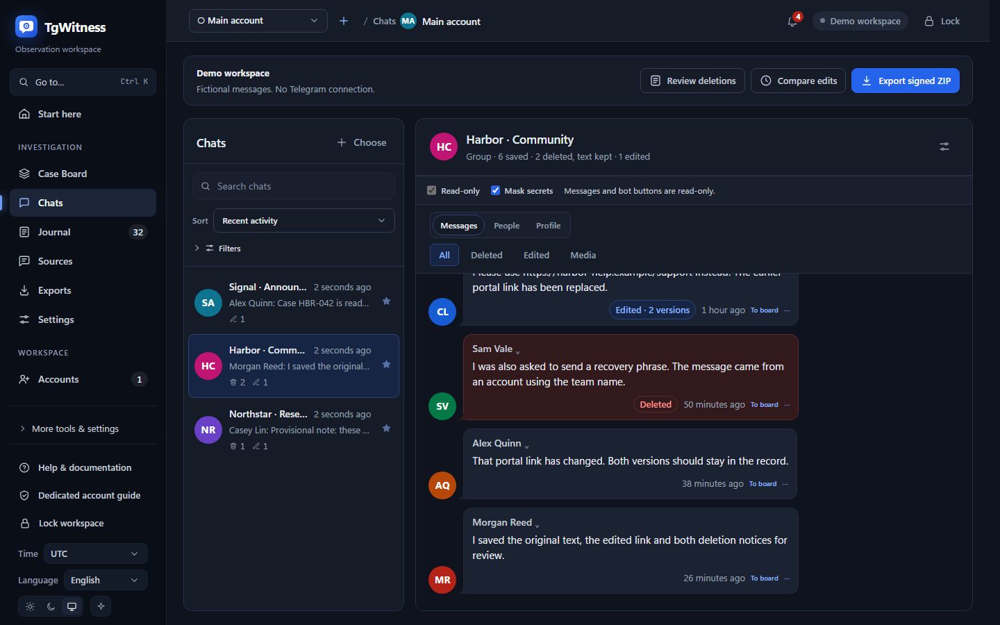
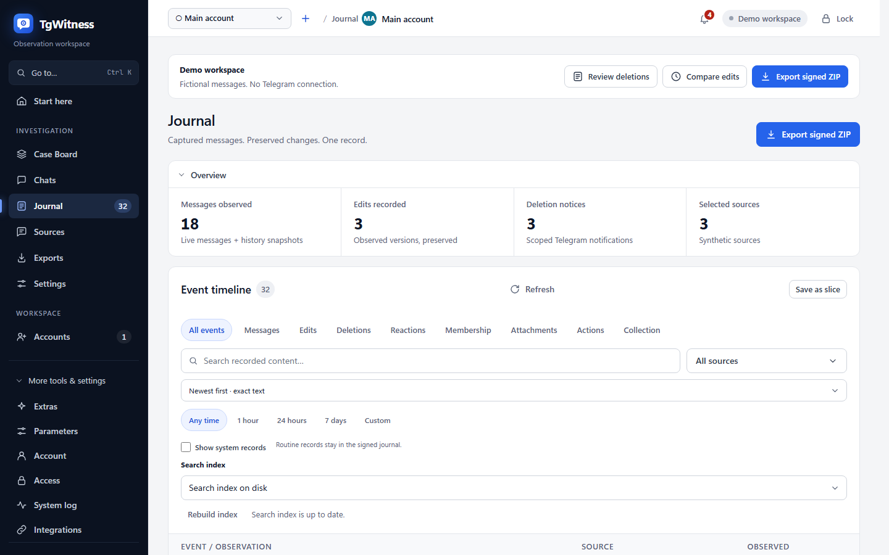
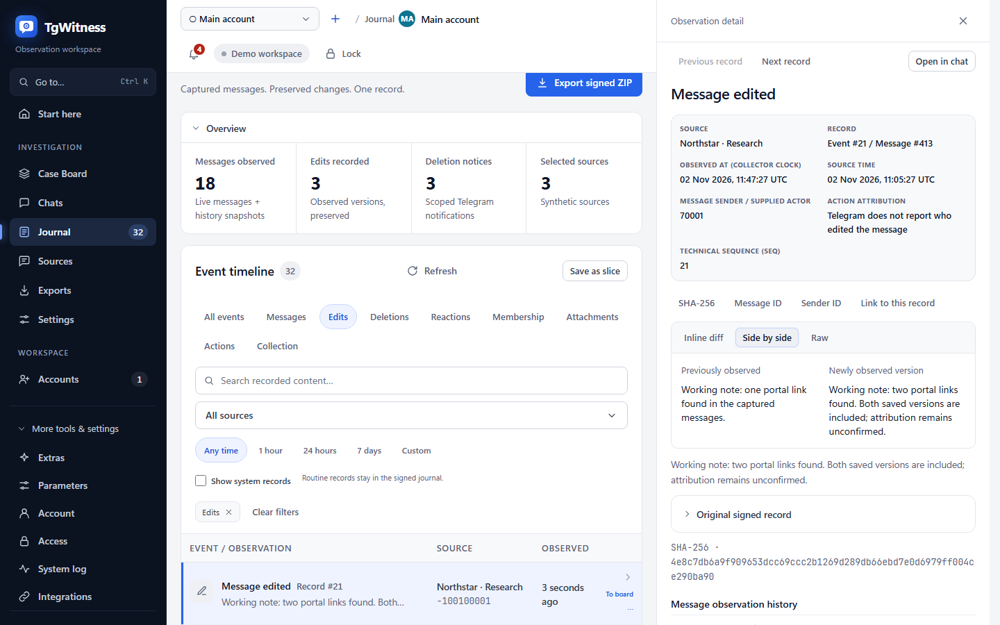
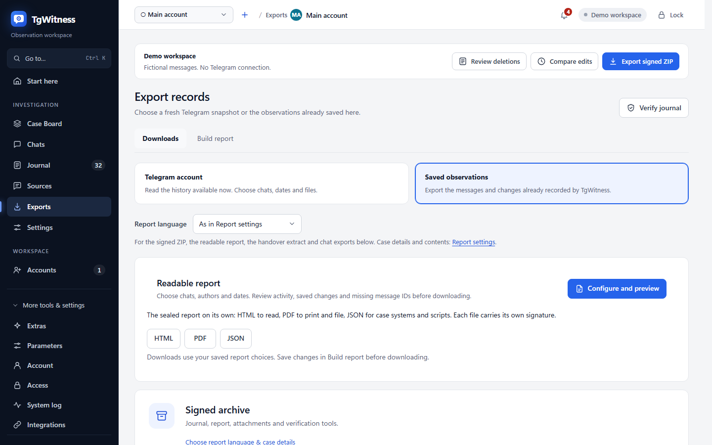
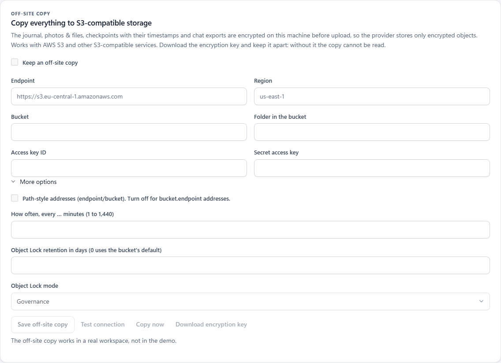

आप दायरा चुनते हैं।
कुछ चैट， एक फ़ोल्डर या पूरा खाता। हर खाते का अपना वर्कस्पेस होता है।
संग्रह मोड की तुलना करेंटेलीग्राम चैट्स का एक्सपोर्ट करें， उनका इतिहास संरक्षित करें， और एक हस्ताक्षरित आर्काइव साझा करें जिसे अन्य सत्यापित कर सकते हैं।
नकली डेटा， Telegram लॉगिन की ज़रूरत नहीं।
एक खाता या चयनित चैट्स निर्यात करें GitHub Actions से संग्रह （पूर्वावलोकन） S3 ऑफ－साइट प्रतिलिपि： सेटअप और रिकवरीब्रीफिंग 14：00 पर शुरू होती है।
ब्रीफिंग 15：00 पर शुरू होती है।
पिछला संस्करण बरकरार रखा गयाकैप्चर की गई सामग्री आपके जर्नल में रहती है।
संदेश गायब हो जाता है। कैप्चर किया गया इतिहास बना रहता है।
01 कार्यक्षेत्र
असली इंटरफ़ेस， गढ़े हुए डेटा के साथ।




Case Board， रिपोर्ट डिज़ाइन और एक साझा प्रति के माध्यम से एक सहेजे गए रिकॉर्ड का अनुसरण करें। खाता समूहों की समीक्षा एक साथ करें।
कुछ चैट， एक फ़ोल्डर या पूरा खाता। हर खाते का अपना वर्कस्पेस होता है।
संग्रह मोड की तुलना करेंसंस्करण， हटाए गए संदेश और अंतराल सब जर्नल में रहते हैं।
इवेंट मैट्रिक्स देखेंहस्ताक्षरित ZIP， फ़ाइलें और ऑफ़लाइन रिपोर्ट। पासवर्ड वैकल्पिक।
का निर्यात और सत्यापन करेंरिकॉर्ड कैसे एक साथ बना रहता है
प्रत्येक घटना पिछले हैश से जुड़ी होती है और एक Ed25519 हस्ताक्षर रखती है।



फ़ाइल हैश से एक अलग रूप से रखे गए चेकपॉइंट तक जांच प्रक्रिया का पालन करें।
के आठ साक्ष्य स्तरों का अन्वेषण करेंसमीक्षा के लिए निर्मित
संदेश， फ़ाइलें और ऑफ़लाइन रिपोर्ट एक हस्ताक्षरित बंडल में।
साक्ष्य मॉडल पढ़ेंप्राप्तकर्ता आपकी कुंजी से सब कुछ जाँचता है， और कहीं और रखा चेकपॉइंट दिखाता है कि तब से कुछ भी दोबारा नहीं लिखा गया। जाँच कैसे काम करती है।
भंडारण， निरंतरता और सत्यापन
एन्क्रिप्टेड प्रतियाँ रखें और स्वतंत्र जांच जोड़ें।
निर्यात → ऑफ－साइट प्रति
डिफ़ॉल्ट रूप से बंदजर्नल， फ़ाइलें， चेकपॉइंट और चैट एक्सपोर्ट， S3 पर जाने से पहले एन्क्रिप्ट।
AES-256-GCM आपकी मशीन पर। प्रदाता को केवल सिफ़रटेक्स्ट दिखता है।
AES-256-GCMS3－संगत भंडारणरिकवरी कुंजी इसे अलग रखें， इसके बिना कॉपी पढ़ी नहीं जा सकती।
समस्याएँ， चैट में बदलाव और दैनिक सारांश मैसेंजर， ईमेल या आपके अपने webhook पर।
चुनें क्या साझा करना है संदेश का पाठ नहीं， जब तक आप उसे चालू न करें।
सूचना गंतव्यों को कॉन्फ़िगर करेंRFC 3161 और OpenTimestamps के साथ टाइमस्टैम्प चेकपॉइंट हैश।
परिणाम पर नज़र रखें TSA का उत्तर जाँचें या OpenTimestamps रसीद को Bitcoin प्रमाण में अपग्रेड करें।
टाइमस्टैम्प प्रमाण देखेंएक अलग होस्ट हस्ताक्षरित अवलोकन रखता है और प्रकाशित कर सकता है TGW1 चेकपॉइंट्स।
संदर्भ अलग रखें इसे दूसरे होस्ट पर चलाएँ， अपनी कुंजी और जर्नल के साथ।
एक विटनेस सेट अप करेंपुनरारंभ के बाद फिर से शुरू करें। पुनः जाँच और coverage.json पुनः प्राप्त संदेश और अंतराल दिखाएँ।
अंतराल की समीक्षा करें पुनर्प्राप्त संदेश और दर्ज अंतराल साथ－साथ।
निरंतरता और अंतरालों का निरीक्षण करेंआपकी मशीन पर
पहले डेमो आज़माएँ， तैयार हों तो एक अतिरिक्त खाता जोड़ें।
Windows， Linux， macOS या Docker।
टेलीग्राम खाते के बिना काल्पनिक कार्यक्षेत्र आज़माएँ।
scripts\Demo.cmdलिनक्स ／ मैकओएस sh start.sh --demoस्रोत ZIP डाउनलोड करें और उसे एक्सट्रेक्ट करें， या रिपॉजिटरी क्लोन करें：
git clone https://github.com/phishdestroy/TgWitness.git
cd TgWitnessPython 3.11+ ज़रूरी है। Windows पर लॉन्चर इसे इंस्टॉल करने की पेशकश करता है।
रिलीज़ ब्राउज़ करेंStart.cmd पर डबल－क्लिक करें， या PowerShell में चलाएँ：
.\Start.cmdसिर्फ़ देख रहे हैं？ एक अलग डेमो के लिए scripts\Demo.cmd पर डबल－क्लिक करें। टेलीग्राम लॉगिन की आवश्यकता नहीं है।
पाइथन 3.11+ और venv उपलब्ध：
sh start.shकल्पनिक जर्नल खोलने के लिए इसके बजाय sh start.sh --demo चलाएँ।
Docker चलने और Compose 2.20+ स्थापित होने पर：
docker compose up -d --build --wait
docker compose exec tgwitness cat /data/panel-token.txtदूसरा कमांड आपका निजी पैनल टोकन दिखाता है। इसे अपनी मशीन पर रखें।
लॉन्च के बाद 127.0.0.1:8787 पर खोलें।
सोर्स से इंस्टॉल करने पर टोकन data/live/panel-token.txt में रहता है। my.telegram.org से अपनी API जोड़ी वैकल्पिक है। पूरी सेटअप गाइड ↗
TgWitness 0.9.1 क्या नया है → · विशेषताएँ और ज्ञात सीमाएँ →
एक समय में एक कार्य
चार संग्रह मोड। आठ सत्यापन स्तर। अपने मामले के लिए कार्यप्रवाह खोजें।
इतिहास， स्रोतों के साथ AI， MCP， OCR और हस्ताक्षरित webhooks।
नहीं। यह नकली उदाहरणों वाला स्थिर पेज है। ऐप आपकी अपनी मशीन पर चलता है और आप वहीं साइन इन करते हैं।
नहीं। यह वही रखता है जो आपके खाते ने चलते समय देखा। बाद का स्नैपशॉट छूटे संपादन या हटाए गए संदेश दोबारा नहीं बना सकता।
सेशन और कुंजियाँ हाँ। संदेश और फ़ाइलें नहीं， डिस्क एन्क्रिप्शन इस्तेमाल करें। एक्सपोर्ट पर AES－256 पासवर्ड लग सकता है।
नहीं। यह Telethon पर बना MIT－लाइसेंस वाला स्वतंत्र प्रोजेक्ट है। आप अपने खातों से लॉगिन करते हैं।
PROJECT NOTICE ／ LICENCE
Taylor Wessing PartG mbB， German core， Hamburg office．
This statement from the authors of TgWitness adds no condition to the MIT License， and the complete notice includes its source record．
आपका अगला कदम